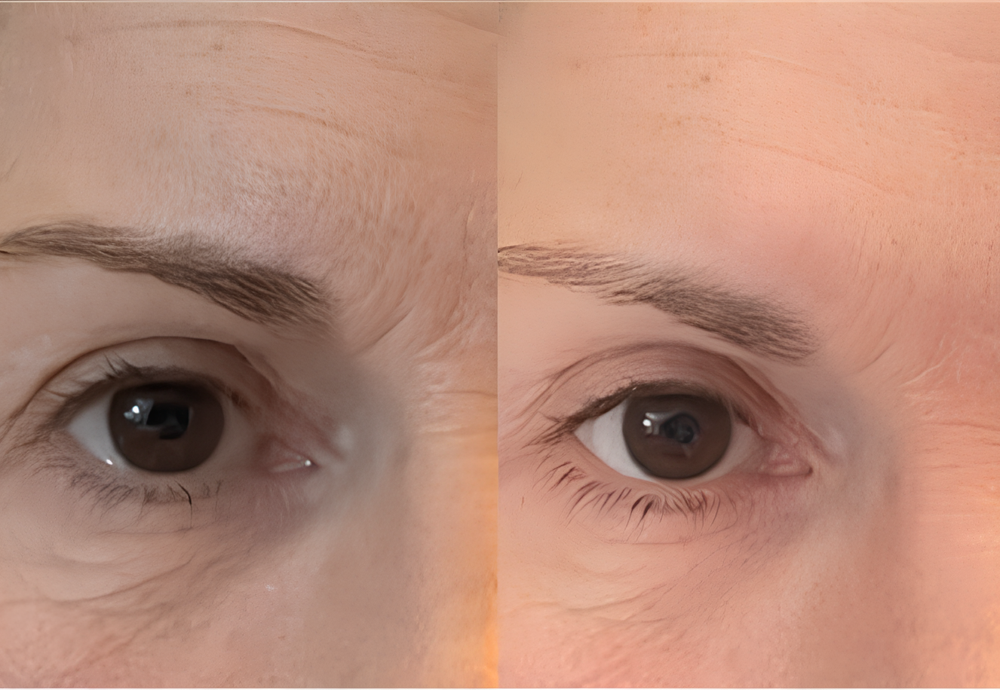

Retinal
Redutor
de Linhas

O Retinal Redutor de Linhas Lumière foi criado para mulheres que já tentaram muitas coisas — e agora querem algo que realmente funcione, com segurança e sem precisar sair de casa.
Em 48 horas, a pele já responde: linhas de expressão mais suaves, olhos descansados, contorno mais firme. Sem agulhas. Sem dor. Sem compromisso com procedimentos.
Conteúdo: 15 ml · Entrega: 15 a 30 dias úteis
Composição completa:
Aqua (Água) · Glycerin (Glicerina) · Retinal (Retinal) · Retinaldehyde (Retinaldeído) · Ascorbic Acid (Vitamina C) · Soluble Collagen (Colágeno Solúvel) · Caprylic/Capric Triglyceride (Triglicerídeo Caprílico/Cáprico) · Tocopherol (Vitamina E) · Bisabolol (Bisabolol) · BHT (Butil-Hidroxitolueno) · Disodium EDTA (Edetato Dissódico) · Phenoxyethanol (Fenoxietanol)
Fórmula aprovada por dermatologistas. Segura para uso ao redor dos olhos e peles sensíveis.
Cada ruga tem uma história.
Mas algumas não precisam
ficar.

Linhas que somem.
Memórias que ficam.
"nossa gente eu tentei de tudo mesmo, creme caro, aqueles patchs, tudo… esse retinal foi a primeira coisa q funcionou de verdade pra mim. me olhei no espelho e nao acreditei kkk parece q voltei uns 10 ano atras" — Catiane B., 58 anos

Olhos que contam
só o que você quer.
"larguei o corretivo embaixo do olho de vez porque nao precisa mais!! o serum ja faz isso e melhor que qualquer maquiagem q eu já usei na vida. minhas filha n acreditaro quando falei kkk" — Odete L., 63 anos

A firmeza que você
sentia e voltou a encontrar.
"meu rosto tava bem flacido já, tinha me conformado sabe… ai minha sobrinha me indicou esse retinal e gente!! recuperei meu contorno, me sinto eu mesma de novo. nao to mais com aquela cara de cansada nao" — Maria D. Amorim, 55 anos
Três gestos simples.
Um ritual que você vai querer
repetir.

Aplique
Com a pele limpa e seca, aplique uma pequena quantidade diretamente sobre as linhas de expressão e as regiões que deseja tratar.

Espalhe
Com batidinhas suaves dos dedos, distribua o produto de forma uniforme. Sem esfregar — a pele merece esse delicado.

Relaxe 3 min
Fique confortável, sem fazer expressões, por apenas 3 minutos. É o seu tempo. Use bem.
O que muda quando você
decide se cuidar de
verdade.

"gente eu nao acreditei quando vi no espelho!!"
"as ruga em volta dos olho sumiram em minuto, nao é exagero nao!! faz tanto tempo q eu nao me via assim no espelho. to usando todo dia agora e n abro mao de jeito nenhum mesmo"

"as amiga ficaro loucas querendo saber o q eu fiz kkk"
"passei o retinal antes de um churrasco na minha irma e todo mundo perguntou o que eu fiz no rosto. nao fiz NADA so o retinal mesmo kkk fiquei ate com vergonha de falar pq parecia mentira"

"eu parecia cansada mesmo descansada, agora nao mais"
"as bolsa embaixo do olho me enveleheciam demais, minha neta ate perguntou pq eu tava com sono kkk agora com o retinal sumiu tudo. to me sentindo outra pessoa, sem exagero nenhum"
Este pode ser o momento
em que você se colocou em primeiro lugar.
Mais de 50.000 mulheres já escolheram se cuidar — sem agulhas, sem dor, sem abrir mão da própria rotina. Você merece sentir o mesmo.
90 dias
seguro
todo Brasil